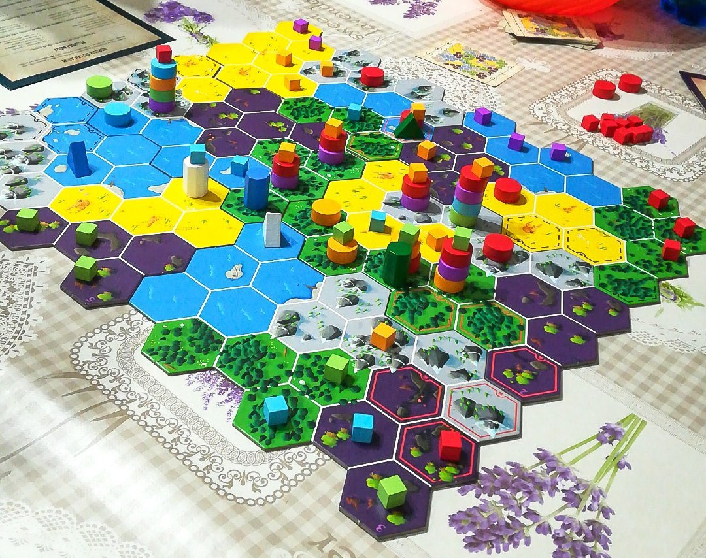

CRYPTID

30/50 minuti 3-5 10+
In Cryptid dobbiamo identificare il nascondiglio della creatura misteriosa, ovvero,
in termini di gioco, capire quale esagono della mappa esplorare. L’esagono è unico per ogni configurazione
mappa – numero di giocatori e viene riconosciuto immediatamente non appena tutti gli indizi dei partecipanti
diventano noti. L’idea alla base del titolo è quella di scoprire le informazioni in mano ai nostri avversari
con domande sempre più mirate e indovinare l’esagono corretto prima di loro.
La partita inizia con una condivisione iniziale delle informazioni. A partire dal primo giocatore e procedendo in
senso orario per due volte, ognuno piazza un cubetto sulla mappa in un territorio che, secondo il suo indizio,
non può contenere la tana del Cryptid. I cubi infatti indicano un terreno sicuramente da escludere
per le nostre ricerche, mentre i dischi indicano che la tana potrebbe trovarsi lì.
Ci sono un paio di regolette da sottolineare:
Non si possono piazzare cubetti in esagoni che già contengono altri cubetti, e non si può piazzare un nostro
segnalino su un territorio che già ne contenga uno del nostro colore.
Bisogna essere onesti nel piazzamento, dal momento che anche solo un segnalino in posizione errata può
compromettere la riuscita della partita.
La partita si svolge a turni sempre seguendo il senso orario, e all’interno di ognuno di essi il giocatore
sceglie una tra due possibili azioni:
-Interrogare: si sceglie un esagono privo di cubi e vi si piazza la pedina nera chiedendo a uno degli avversari se,
secondo il suo indizio, la tana potrebbe trovarsi in quel territorio. In caso di risposta affermativa,
l’avversario posizionerà un proprio disco su quel terreno, altrimenti vi piazzerà un cubetto.
Al piazzamento del cubetto bisogna sempre rispondere con un piazzamento di un proprio cubetto su un altro terreno,
quindi con un’interrogazione sbagliata si è costretti a dare altre informazioni sul proprio indizio.
-Esplorare: si tratta dell’azione che può concludere la partita, dove un giocatore dichiara di voler
indovinare l’esatta ubicazione della tana. Egli piazza subito un proprio disco su quel territorio
(l’esagono deve essere eligibile in base alle proprie informazioni), e a partire dal giocatore
alla sua sinistra ciascuno, secondo il proprio indizio, piazza un disco o un cubo.
Non appena viene posizionato un cubo, il giro si ferma, si perdono eventuali informazioni dei giocatori
successivi e si ricade nel caso precedente sull’interrogazione sbagliata. Se tutti i giocatori posizionano dischi,
l’esagono è stato scoperto e il giocatore di turno vince la partita.
RECENSIONE
Cryptid è un gioco bello ma abbastanza difficile, già a partire dalla comprensione delle regole. Una partita è lunga e sufficiente perché bisogna rimanere concentrati durante tutto il gioco, altrimenti se qualcuno sbaglia il proprio indizio, il gioco tende a prolungarsi e non si riesce a trovare la soluzione.